Visual Search enables you to perform and review searches by using one of three 2-dimensional charts as well as a Concept Wheel. This type of searching lets you view results in a manner that correlates between two or more data fields, or in relation to a data set as a whole.
With Visual Search, you can combine text-based and metadata-based criteria into a single search, with the options to specify a valid date range and to include document family members. The criteria will be evaluated according to one of three search types: Contains All, Contains One or More, and Exclude these. Each search type can contain multiple conditions that subsequently contain multiple values.
After entering
the Visual Search Review Dashboard appears. The dashboard is a full-screen display of all the Visual Search elements: charts/Concept Wheel, plus the Results grid and the Search Report. The full-screen icons allow you to see each dashboard area in full-screen view.
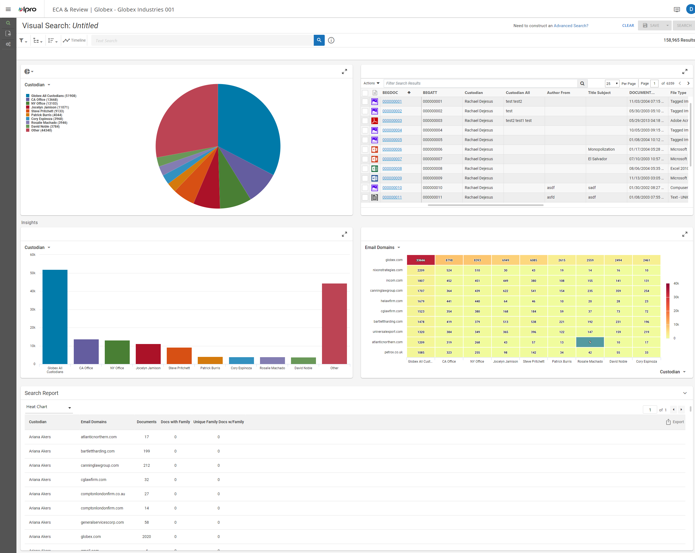
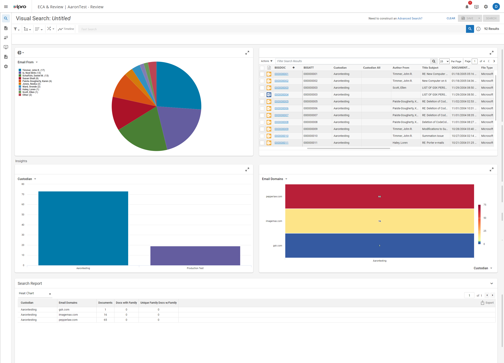
This area of the dashboard contains a Bar Chart and a Heat Map. As the Insights label implies, these Visual Search elements add further detail and insights into the search results. The elements are described in the Charts section that follows.
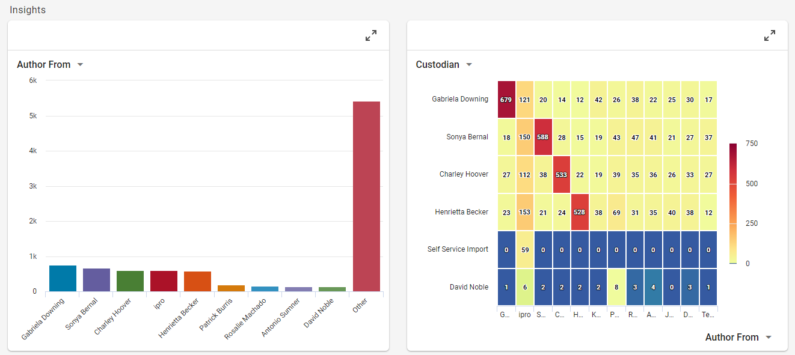
In the Visual Search Review dashboard you will see the following chart elements:
A Pie Chart displays sections with the nine highest counts for any given search along with a tenth count containing all “Other” results.

What the pie sections represent is determined by the filter field you select from the pull-down menu at the top left of the chart.

When you hover over a pie section, a tool tip pop-up shows the section counts and values (for example, "Rosalie Machado ... 3946/158965..."), as also indicated by the chart’s legend.
|
|
Note: Clicking the icon above the Pie Chart pull-down menu allows you to choose the Concept Wheel or the Pie Chart. For more information about the Concept Wheel, see
For information about how search criteria is determined for the Concept Wheel and the Pie Chart, see |
A Bar Chart displays sections with the nine highest counts for any given search along with a tenth count containing all “Other” results.

What the bars represent is determined by the filter field you select from the pull-down menu at the top left of the chart.
When you hover over a bar, a tool tip pop-up show the section counts and values (for example, "Cory Espinoza ... 3968/158965..."), as also indicated by the chart’s legend.
For information about how search criteria is determined for the Bar Chart, see
A Heat Map shows the correlations between two different fields, along both the X- and Y-axes. Each axis contains a drop-down menu that allows you to determine the filter fields displayed along each axis. In the following example, the X-axis is set to Email From, and the Y-axis is set to Email To.

For information about how search criteria is determined for the Heat Map, see
The concept wheel is a visual representation of cluster details and and based on the clusters configured by your administrator. It corresponds to the details listed for a selected top-level cluster as shown in the Visual Search dashboard:

When you hover over a cluster, a tool tip pop-up shows the section counts and values (for example, "contract, law, party, property, agreement, legal... 3964/80286..."), as also indicated by the chart’s legend.
Clicking the icon above the Concept Wheel pull-down menu allows you to choose the Concept Wheel or the Pie Chart.
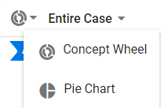
|
|
Note:
|
For information about how search criteria is determined for the Concept Wheel, see
For more in-depth search capability, which includes editing search criteria, go the Advanced Search tab by clicking the link within Need to construct an Advanced Search? in the top right of the dashboard.
The Analytics Settings view can now be used to create and modify cluster sets. For more information, see
When determining search criteria within any of the Visual Search dashboard charts, there are two distinct scenarios:
You can accomplish both scenarios A and B by using the hover-over-the-chart method. See
|
|
Note: Using the hover-over-the-chart method allows only the first chip to contain multiple ORed values. |
You can also accomplish scenario B by using the chip drop-down menu filter method. See
Once you have created a chip, you can add more values to the chip by clicking the chip to access its drop-down menu.
For these two methods, the Pie Chart is used as the example in this discussion, though the methods apply to all the chart types.
|
|
Note: This method will work for most users' search criteria requirements. If you require a more flexible criteria setup, please see |
In the following Pie Chart example, hovering over a pie section and clicking ADD CRITERIA TO SEARCH creates a chip for that section.
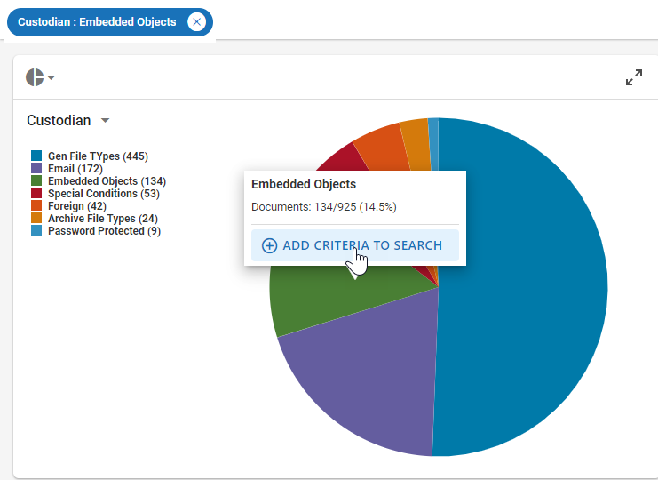
Once this takes place, hovering over a section produces either an UPDATE EXISTING or ADD NEW pop-up option.
| Note: In the hover-over-the-chart method, the UPDATE EXISTING option is only active for the first chip and ORs the chosen value to the existing value(s) in the first chip. Once ADD NEW is chosen, a new chip is created and its single value is ANDed to the first chip. At this point the UPDATE EXISTING option is inactive and grayed out. Subsequent chips can only be ANDed to the previous chips. |
Clicking UPDATE EXISTING will OR the selected value to the value already existing within the chip. The chip now displays the updated criteria by including a “+1” to indicate there is an ORed concept included in the chip.
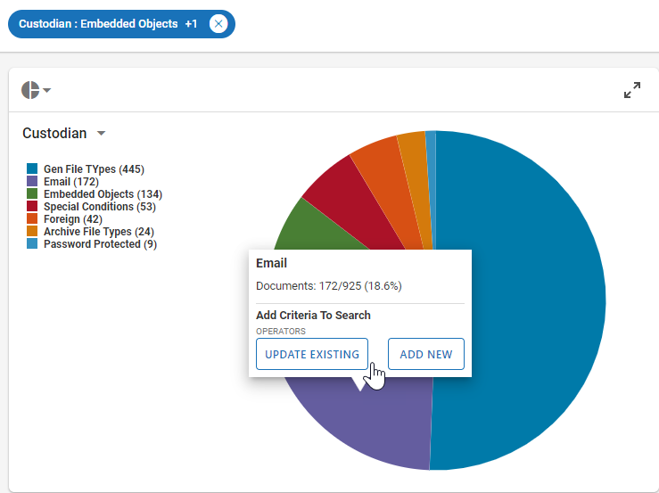
You can OR additional concept criteria within the first chip multiple times. Hovering over another section and clicking UPDATE EXISTING will OR that value to the others within the chip. The chip display will now include a “+#”, where the # indicates how many additional selected criteria are currently ORed within the chip.
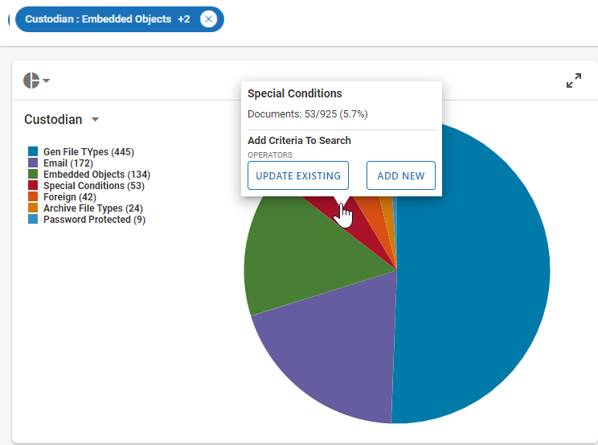
Clicking ADD NEW creates a chip for that single value and then ANDs the new chip to the existing chip or chips. Hovering over another section and clicking ADD NEW will create a new chip that will be ANDed to the existing chips. Multiple chips can be created this way and ANDed together.
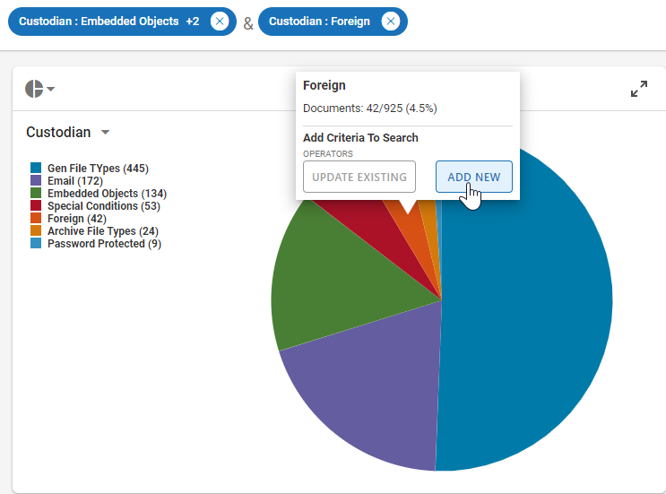
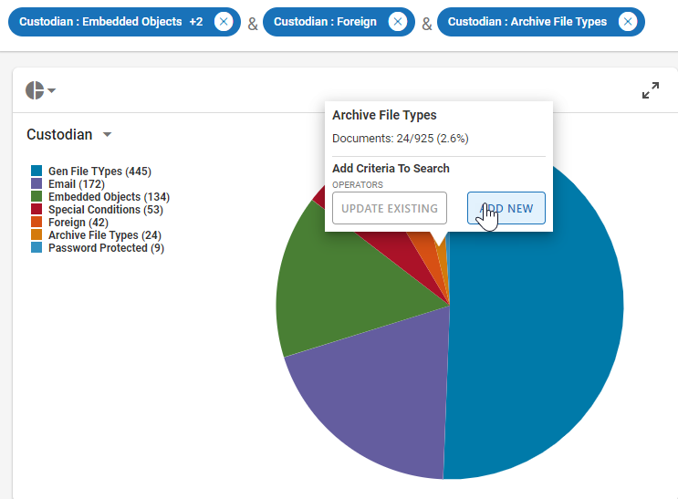
After the very first chip is ANDed to the second chip, the UPDATE EXISTING option is grayed out, letting the user know through a pop-up that “One or more criteria already exists, please edit using the existing filter.” Unless you choose to use the drop-down menu filter method (see
| Notes:
|
For most users, the
To add values that you want to OR within a chip, click the chip and the following drop-down menu displays for the selected filter field.
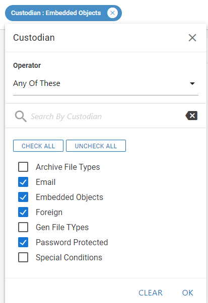
In the drop-down menu, you can select one of three Operators:Any of These, All of These, and None of These. The operators act on the selected types in the list.
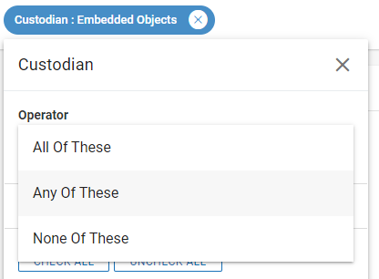
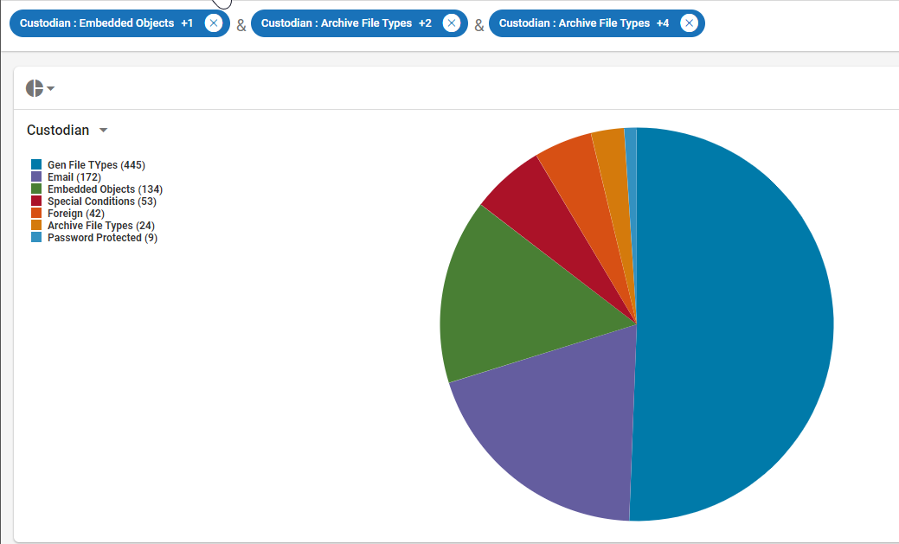
| Notes:
|
Search Filters allow you to further refine your search results by selecting one of the filter options in the Filters drop-down menu :

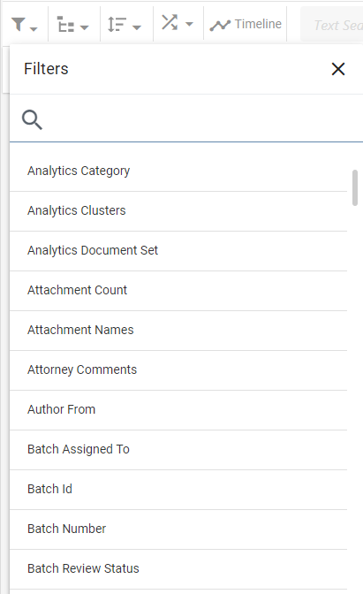
System Fields on which you can search include the following examples:
System Field | Description |
|---|---|
BEGATT | A unique number used to track the first page of a document family |
BEGDOC | A unique number used to track the first page of a document |
ENDATT | A unique number used to track the last page of a document family |
ENDDOC | A unique number used to track the last page of a document |
Extracted Text | Document's text |
Extracted Text Size | Document's text size (KB) |
MD5 Hash | A unique value for a document used for determining duplicates |
When performing a search requires the use of a search relationship, use the Relationships drop-down menu.

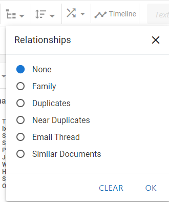
The Sort Options drop-down menu contains a list of fields on which to sort the Visual Search.

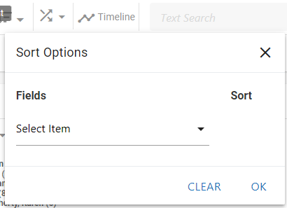
Random sampling provides a representative set of documents from the search results. With random sampling, every document in your search results has an equal chance of participating in the sample; the number of documents in the sample depends on which sampling type you choose: (1) a statistics calculation based on confidence level and margin of error values that you set, or (2) a fixed value that you define.
When active learning (

Confidence Level has three options: 90, 95, and 99.
Margin of Error has a range of 1-5.

Fixed Size is an integer field.
The Timeline allows you select date criteria for the search. You can select Include Empty & Invalid Dates as well. On the dashboard, clicking  displays the Timeline across the top:
displays the Timeline across the top:
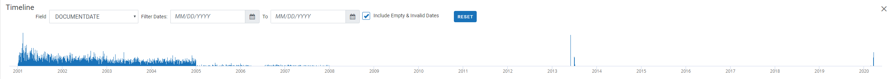
For additional information, see
The Results grid segment of the dashboard lists all documents meeting your search criteria in a grid format. The column heading fields reflect the fields on the first coding form.
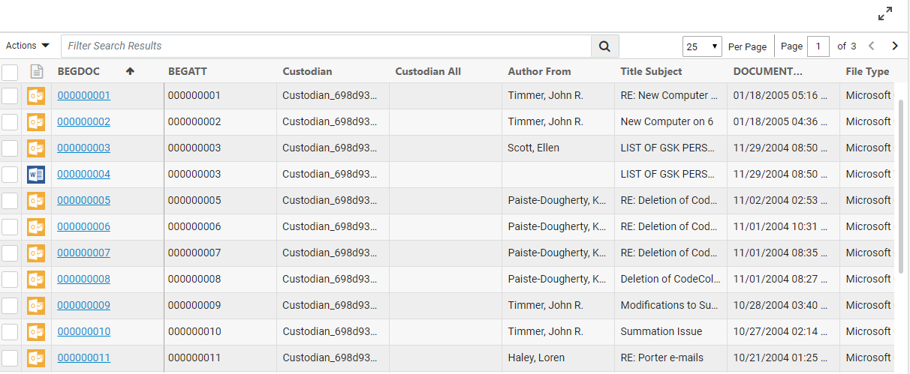
For more information about how Search Results works, see
The Search Report allows you to view the case data that correlates to your visual search parameters. For either the Pie Chart or Bar Chart, the Search Report shows document counts, as well as family document counts, as it relates to the data field(s) selected for your chart’s axis.
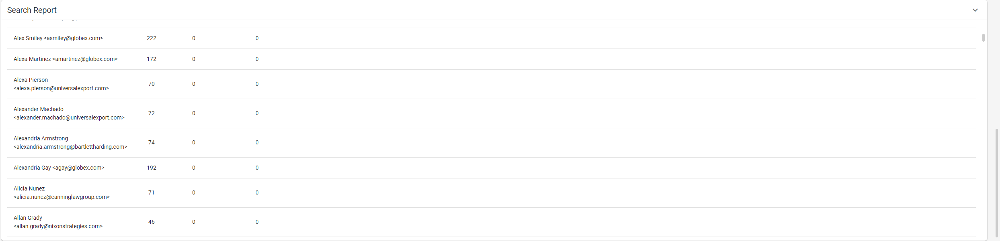
Within the report, there is a pull-down menu that allows you to switch between the Pie Chart and the BarChart.
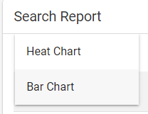
You can change the sort order of the report alphabetically by field, or numerically by document count.
Any time before or after a visual search is run, you
can revise the selected search criteria. For more details about revising
search criteria, see
After you have built and saved a Visual Search, you can run Advanced Search capabilities by editing the search within the Advanced Search tab by clicking the link within Need to construct an Advanced Search? in the top right of the dashboard.

In Advanced Search, when finished click  ,
,  , or
, or 
To continue with an Advanced Search, see
Related Topics